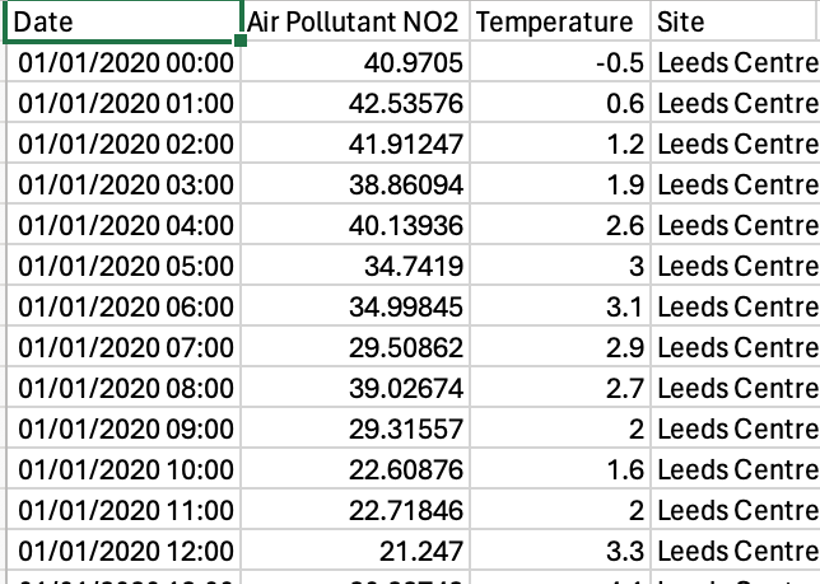

Pandas#
Problem Setup#
Within Leeds centre there is an air pollution monitoring station. We are going to use the real data from the station to guide you through building and analysing a simple machine learning algorithm, using three popular python packages.
Leeds Air Pollution Monitoring Station#

Google Maps Locations of Leeds Air Pollution Monitoring Station#

# The first step that needs to be taken is to import the pandas package into the notebook.
import pandas as pd
Pandas has become Python’s de facto standard for data manipulation and analysis in Python, with a particular focus on tabular data. As you saw in the previous workshop Python has a range of data structures but if you were given a .csv with air pollution data which data structure would you use?
.csv File Within Microsoft Excel#

A dictionary with a list?#
air_pollution_data = {
"Date":["01/01/2020 00:00", "01/01/2020 01:00", "01/01/2020 02:00", "01/01/2020 03:00", "01/01/2020 04:00"],
"Air Pollutant NO2":[40.9705, 42.53576, 41.91247, 38.86094, 40.12936],
"Temperature":[-0.5, 0.6, 1.2, 1.9, 2.6]
}
Issues:
Getting the data into the lists of the dictionary, do we copy and paste from an excel spreadsheet or .txt file and then add commas?
How do we perform restructure? E.g. order the dates in reverse order?
How do we perform analysis? E.g. get the air pollution on Mondays to find the average air pollution at rush hour?
Pandas helps with all these issues!
Reading in Data#
Pandas has a range of different methods to read data from files such as .csv, .json, .feather, .pickle and many more. The numerous options for input file types is discussed extensively on the Pandas IO Tools Page
Depending on the data that you want to read in you will need a different function.
All of the functions that pandas offers are available via the documentation online
What is documentation?
Documentation in the context of Python packages refers to the collection of descriptive and explanatory materials accompanying the package. This documentation is essential for understanding the package’s functionality, how to use it effectively, and its various features and limitations.
Exercise 1 - Read and display the data#
Navigate to the Pandas documentation for .read_csv() (https://pandas.pydata.org/pandas-docs/stable/reference/api/pandas.read_csv.html)
Use the python function read_csv() to read in the .csv file “LEED_air_pollution_monitoring_station.csv”
from jupyterquiz import display_quiz
display_quiz("../../questions/pandas_question_reading_data.json")
# Write some code to read in the .csv file within the .csv file at "data/LEED_air_pollution_monitoring_station.csv"
filename = "data/LEED_air_pollution_monitoring_station.csv"
#air_pollution_data = *Your code here*
Exercise 1 Solution
air_pollution_data = pd.read_csv("data/LEED_air_pollution_monitoring_station.csv")
Show code cell source
filename = "data/LEED_air_pollution_monitoring_station.csv"
air_pollution_data = pd.read_csv(filename)
Breakdown of the Display Function Output
If using jupyter lab you can pass the dataframe that has been read in to display() to visualize the dataframe

# Visualise the dataframe
display(air_pollution_data)
| date | NO2 | O3 | NO | ws | temp | site | Year | |
|---|---|---|---|---|---|---|---|---|
| 0 | 01/01/2020 00:00 | 40.97050 | 12.04072 | 5.77062 | 0.0 | -0.5 | NaN | 2020.0 |
| 1 | 01/01/2020 01:00 | 42.53576 | 10.77678 | 8.32555 | 0.7 | 0.6 | Leeds Centre | 2020.0 |
| 2 | 01/01/2020 02:00 | 41.91247 | 10.97635 | 9.18453 | 1.3 | 1.2 | Leeds Centre | 2020.0 |
| 3 | 01/01/2020 03:00 | 38.86094 | 10.57721 | 7.49960 | 0.7 | 1.9 | Leeds Centre | 2020.0 |
| 4 | 01/01/2020 04:00 | 40.13936 | 8.23226 | 10.30782 | 1.7 | 2.6 | Leeds Centre | 2020.0 |
| ... | ... | ... | ... | ... | ... | ... | ... | ... |
| 32827 | 31/12/2023 19:00 | 16.62005 | NaN | 1.41302 | 5.5 | 7.1 | Leeds Centre | 2023.0 |
| 32828 | 31/12/2023 20:00 | 17.25982 | 50.59100 | 1.18822 | 5.0 | 7.3 | Leeds Centre | 2023.0 |
| 32829 | 31/12/2023 21:00 | 11.86560 | 57.22670 | 1.62712 | 5.6 | 6.8 | Leeds Centre | 2023.0 |
| 32830 | 31/12/2023 22:00 | 15.93160 | 57.22670 | 1.38091 | NaN | 7.2 | Leeds Centre | 2023.0 |
| 32831 | 31/12/2023 23:00 | 23.55329 | 57.42627 | 1.99108 | 6.8 | 7.3 | Leeds Centre | 2023.0 |
32832 rows × 8 columns
What is a dataframe?#
A dataframe is the key data structure within Pandas. Dataframes are two-dimensional, size-mutable and potentially hererogeneous tabular data structure with labeled axes (rows and columns).
A dataframe is built ontop of another data structure called a pandas Series. These are one dimensional labelled array capable of holding any data type. Each column in a dataframe is a pandas series.
For now we will leave these data structures and focus on the analysis and usage of data frames
Accessing Data about the dataframe#
A range of different methods exist within pandas to access attributes of the dataframe, some of note are:
.info(): provides a concise summary of the dataframe, including the number of non-null entries in each column, data type, memory usage, and more
.shape: Returns a tuple representing the dimensions of the dataframe (rows by columns)
.dtypes: Returns the data types of each column in the dataframe
.columns: Returns the column labels of the dataframe
# Access details about the dataframe
display(air_pollution_data.info())
<class 'pandas.core.frame.DataFrame'>
RangeIndex: 32832 entries, 0 to 32831
Data columns (total 8 columns):
# Column Non-Null Count Dtype
--- ------ -------------- -----
0 date 30849 non-null object
1 NO2 30889 non-null float64
2 O3 30870 non-null float64
3 NO 30884 non-null float64
4 ws 30851 non-null float64
5 temp 30870 non-null float64
6 site 30855 non-null object
7 Year 30829 non-null float64
dtypes: float64(6), object(2)
memory usage: 2.0+ MB
None
# Access details about the columns and rows of the dataframe
display("The shape of the dataframe, in the form of the rows by columns is: " + str(air_pollution_data.shape))
display("The columns of the dataframe are: " + str(air_pollution_data.columns))
'The shape of the dataframe, in the form of the rows by columns is: (32832, 8)'
"The columns of the dataframe are: Index(['date', 'NO2', 'O3', 'NO', 'ws', 'temp', 'site', 'Year'], dtype='object')"
from jupyterquiz import display_quiz
display_quiz("../../questions/pandas_question_reading_data.json")
# Access the data types that are used for each of the columns of the dataframe
display(air_pollution_data.dtypes)
date object
NO2 float64
O3 float64
NO float64
ws float64
temp float64
site object
Year float64
dtype: object
Improving Readability#
Change the name of the two column names for “ws” and “temp” into something more readable such as “Wind Speed” and “Temperature”
Exercise 2 - Improving Readability#
You will want to use the pandas .rename() functions and so will need to google for the documentation. It should be the first results when googling “Pandas rename”. It might also be helpful to look at the examples at the bottom of the page!
# air_pollution_data = *Your code here*
Exercise 2 Answer
air_pollution_data = air_pollution_data.rename(columns={"ws":"Wind Speed", "temp":"Temperature"})
air_pollution_data = air_pollution_data.rename(columns={"ws":"Wind Speed", "temp":"Temperature"})
display(air_pollution_data)
| date | NO2 | O3 | NO | Wind Speed | Temperature | site | Year | |
|---|---|---|---|---|---|---|---|---|
| 0 | 01/01/2020 00:00 | 40.97050 | 12.04072 | 5.77062 | 0.0 | -0.5 | NaN | 2020.0 |
| 1 | 01/01/2020 01:00 | 42.53576 | 10.77678 | 8.32555 | 0.7 | 0.6 | Leeds Centre | 2020.0 |
| 2 | 01/01/2020 02:00 | 41.91247 | 10.97635 | 9.18453 | 1.3 | 1.2 | Leeds Centre | 2020.0 |
| 3 | 01/01/2020 03:00 | 38.86094 | 10.57721 | 7.49960 | 0.7 | 1.9 | Leeds Centre | 2020.0 |
| 4 | 01/01/2020 04:00 | 40.13936 | 8.23226 | 10.30782 | 1.7 | 2.6 | Leeds Centre | 2020.0 |
| ... | ... | ... | ... | ... | ... | ... | ... | ... |
| 32827 | 31/12/2023 19:00 | 16.62005 | NaN | 1.41302 | 5.5 | 7.1 | Leeds Centre | 2023.0 |
| 32828 | 31/12/2023 20:00 | 17.25982 | 50.59100 | 1.18822 | 5.0 | 7.3 | Leeds Centre | 2023.0 |
| 32829 | 31/12/2023 21:00 | 11.86560 | 57.22670 | 1.62712 | 5.6 | 6.8 | Leeds Centre | 2023.0 |
| 32830 | 31/12/2023 22:00 | 15.93160 | 57.22670 | 1.38091 | NaN | 7.2 | Leeds Centre | 2023.0 |
| 32831 | 31/12/2023 23:00 | 23.55329 | 57.42627 | 1.99108 | 6.8 | 7.3 | Leeds Centre | 2023.0 |
32832 rows × 8 columns
Performing Analysis#
A good overview of all the data can be retrieved using .describe()
We are able to answer the questions such as
What was the maximum air pollution seen for NO2 air pollution?
What was the mean wind speed for Wind Speed?
What was the minimum temperature seen?
display(air_pollution_data.describe())
| NO2 | O3 | NO | Wind Speed | Temperature | Year | |
|---|---|---|---|---|---|---|
| count | 30889.000000 | 30870.000000 | 30884.000000 | 30851.000000 | 30870.000000 | 30829.000000 |
| mean | 20.953541 | 48.435106 | 5.987284 | 3.608013 | 9.259900 | 2021.505790 |
| std | 14.156991 | 22.935032 | 12.072495 | 1.840850 | 5.666552 | 1.115205 |
| min | 0.047450 | -0.299360 | -0.171380 | 0.000000 | -7.200000 | 2020.000000 |
| 25% | 10.706970 | 33.527760 | 1.238450 | 2.300000 | 5.200000 | 2021.000000 |
| 50% | 16.969180 | 50.241750 | 2.954440 | 3.200000 | 9.000000 | 2022.000000 |
| 75% | 27.809480 | 64.012080 | 5.872810 | 4.600000 | 13.100000 | 2022.000000 |
| max | 121.491770 | 172.628050 | 240.920430 | 14.800000 | 31.000000 | 2023.000000 |
Exercise 3 - Subsetting Data#
The analysis that was performed before was on the complete dataset.
You have been given code to filter the dataset to retrieve the data that was measured in 2022.
Adapt the code given to get the data from 2023.
For the data from 2023 determine:
What was the maximum air pollution seen for NO2 air pollution?
What was the mean wind speed for Wind Speed?
What was the minimum temperature seen?
air_pollution_data_2022 = air_pollution_data[air_pollution_data["Year"] == 2022]
# air_pollution_data_2023 = *your code here*
Exercise 3 Answer - Subsetting Data
air_pollution_data_2023 = air_pollution_data[air_pollution_data["Year"] == 2023]
air_pollution_data_2023 = air_pollution_data[air_pollution_data["Year"] == 2023]
Exercise 3 Extra#
What do you think is happening with the filtering code?
What do you get if you print the output for:
air_pollution_data[“Year”]
air_pollution_data[“Year”] == 2022
display(air_pollution_data["Year"])
display(air_pollution_data["Year"] == 2022)
display(air_pollution_data[air_pollution_data["Year"] == 2022])
0 2020.0
1 2020.0
2 2020.0
3 2020.0
4 2020.0
...
32827 2023.0
32828 2023.0
32829 2023.0
32830 2023.0
32831 2023.0
Name: Year, Length: 32832, dtype: float64
0 False
1 False
2 False
3 False
4 False
...
32827 False
32828 False
32829 False
32830 False
32831 False
Name: Year, Length: 32832, dtype: bool
| date | NO2 | O3 | NO | Wind Speed | Temperature | site | Year | |
|---|---|---|---|---|---|---|---|---|
| 16211 | 01/01/2022 00:00 | 27.52143 | 37.65221 | 4.17565 | 3.5 | 9.6 | Leeds Centre | 2022.0 |
| 16212 | 01/01/2022 01:00 | 25.20075 | 33.52776 | 1.90887 | 2.8 | 9.3 | Leeds Centre | 2022.0 |
| 16213 | 01/01/2022 02:00 | 23.93636 | 30.28475 | 3.66860 | 3.6 | 9.6 | Leeds Centre | 2022.0 |
| 16214 | 01/01/2022 03:00 | 12.44882 | 41.80992 | 1.99835 | 3.7 | 10.2 | NaN | 2022.0 |
| 16215 | 01/01/2022 04:00 | 19.22117 | 30.28475 | 1.72991 | 4.3 | NaN | NaN | 2022.0 |
| ... | ... | ... | ... | ... | ... | ... | ... | ... |
| 24658 | 31/12/2022 19:00 | 61.47808 | 7.69505 | 19.84934 | 1.9 | 6.8 | Leeds Centre | 2022.0 |
| 24659 | 31/12/2022 20:00 | 39.43866 | 39.67923 | 4.94648 | 2.1 | 7.0 | Leeds Centre | 2022.0 |
| 24660 | 31/12/2022 21:00 | 25.82594 | 58.21016 | 2.82203 | 1.6 | 7.0 | Leeds Centre | 2022.0 |
| 24661 | 31/12/2022 22:00 | 21.07741 | 58.73363 | 2.31470 | 3.9 | 8.4 | Leeds Centre | 2022.0 |
| 24662 | 31/12/2022 23:00 | 27.86087 | 51.77145 | 3.07570 | 7.1 | 8.9 | Leeds Centre | 2022.0 |
7936 rows × 8 columns
Indexing#
Indexing can be very helpful for selecting, modifying, and summarizing data in Pandas Dataframes. Each dataframe has a dedicated index within it, and in most display formats is shown on the left most side of the table. The index can be retrieved with the index attribute of the dataframe as shown below.
display(air_pollution_data.index)
RangeIndex(start=0, stop=32832, step=1)
However any column can be set as the index of the dataframe with the use of the set_index method. For example we could set the index to be the datetime column within the dataframe.
air_pollution_data = air_pollution_data.set_index("date")
display(air_pollution_data)
| NO2 | O3 | NO | Wind Speed | Temperature | site | Year | |
|---|---|---|---|---|---|---|---|
| date | |||||||
| 01/01/2020 00:00 | 40.97050 | 12.04072 | 5.77062 | 0.0 | -0.5 | NaN | 2020.0 |
| 01/01/2020 01:00 | 42.53576 | 10.77678 | 8.32555 | 0.7 | 0.6 | Leeds Centre | 2020.0 |
| 01/01/2020 02:00 | 41.91247 | 10.97635 | 9.18453 | 1.3 | 1.2 | Leeds Centre | 2020.0 |
| 01/01/2020 03:00 | 38.86094 | 10.57721 | 7.49960 | 0.7 | 1.9 | Leeds Centre | 2020.0 |
| 01/01/2020 04:00 | 40.13936 | 8.23226 | 10.30782 | 1.7 | 2.6 | Leeds Centre | 2020.0 |
| ... | ... | ... | ... | ... | ... | ... | ... |
| 31/12/2023 19:00 | 16.62005 | NaN | 1.41302 | 5.5 | 7.1 | Leeds Centre | 2023.0 |
| 31/12/2023 20:00 | 17.25982 | 50.59100 | 1.18822 | 5.0 | 7.3 | Leeds Centre | 2023.0 |
| 31/12/2023 21:00 | 11.86560 | 57.22670 | 1.62712 | 5.6 | 6.8 | Leeds Centre | 2023.0 |
| 31/12/2023 22:00 | 15.93160 | 57.22670 | 1.38091 | NaN | 7.2 | Leeds Centre | 2023.0 |
| 31/12/2023 23:00 | 23.55329 | 57.42627 | 1.99108 | 6.8 | 7.3 | Leeds Centre | 2023.0 |
32832 rows × 7 columns
It is then also possible to reset the index and put the current index column into the main dataframe with the `reset_index()’ method.
air_pollution_data = air_pollution_data.reset_index()
display(air_pollution_data)
| date | NO2 | O3 | NO | Wind Speed | Temperature | site | Year | |
|---|---|---|---|---|---|---|---|---|
| 0 | 01/01/2020 00:00 | 40.97050 | 12.04072 | 5.77062 | 0.0 | -0.5 | NaN | 2020.0 |
| 1 | 01/01/2020 01:00 | 42.53576 | 10.77678 | 8.32555 | 0.7 | 0.6 | Leeds Centre | 2020.0 |
| 2 | 01/01/2020 02:00 | 41.91247 | 10.97635 | 9.18453 | 1.3 | 1.2 | Leeds Centre | 2020.0 |
| 3 | 01/01/2020 03:00 | 38.86094 | 10.57721 | 7.49960 | 0.7 | 1.9 | Leeds Centre | 2020.0 |
| 4 | 01/01/2020 04:00 | 40.13936 | 8.23226 | 10.30782 | 1.7 | 2.6 | Leeds Centre | 2020.0 |
| ... | ... | ... | ... | ... | ... | ... | ... | ... |
| 32827 | 31/12/2023 19:00 | 16.62005 | NaN | 1.41302 | 5.5 | 7.1 | Leeds Centre | 2023.0 |
| 32828 | 31/12/2023 20:00 | 17.25982 | 50.59100 | 1.18822 | 5.0 | 7.3 | Leeds Centre | 2023.0 |
| 32829 | 31/12/2023 21:00 | 11.86560 | 57.22670 | 1.62712 | 5.6 | 6.8 | Leeds Centre | 2023.0 |
| 32830 | 31/12/2023 22:00 | 15.93160 | 57.22670 | 1.38091 | NaN | 7.2 | Leeds Centre | 2023.0 |
| 32831 | 31/12/2023 23:00 | 23.55329 | 57.42627 | 1.99108 | 6.8 | 7.3 | Leeds Centre | 2023.0 |
32832 rows × 8 columns
It is also possible to make use of the indexes to select different rows within the dataframe. For example it is possible to use loc which makes use to the actual labels within the dataframe, and iloc to refer based on the integer position values as is regularly done for lists within python.
Exercise 4#
Using either loc or iloc retrieve the data from the dataframe air_pollution_data which describes the timestep 01/01/2020 04:00.
Exercise 3 Answer - Subsetting Data
air_pollution_data.loc[4]
Datetimes#
In pandas, datetimes are extremely useful for working on time series data analysis. When reading in your data, you will want to confirm that the date column in the dataframe is of the correct data type, you can check this with the column attribute of .dtype.
display(air_pollution_data["date"].dtype)
dtype('O')
If the column is not currently in a datetime format, then you can convert it using the pd.to_datetime() function. The main arguement to the method is the format arguement that lets the method know the ordering of the data. In our case the data should be of the format %d/%m/%Y %H:%M, which denotes, Day/Month/Year Hour:Minutes. Once we have converted the data format we can check its new data type in the same manner, and should this time get
air_pollution_data["date"] = pd.to_datetime(air_pollution_data["date"], format = "%d/%m/%Y %H:%M")
display(air_pollution_data["date"].dtype)
dtype('<M8[ns]')
The datetime object then allows you to get access to a range of additional data such the year, month, minute of the date object. The month for each observation can be retrieve used the .month attribute of the data as shown below.
air_pollution_data["Month"] = air_pollution_data["date"].dt.month
display(air_pollution_data)
| date | NO2 | O3 | NO | Wind Speed | Temperature | site | Year | Month | |
|---|---|---|---|---|---|---|---|---|---|
| 0 | 2020-01-01 00:00:00 | 40.97050 | 12.04072 | 5.77062 | 0.0 | -0.5 | NaN | 2020.0 | 1.0 |
| 1 | 2020-01-01 01:00:00 | 42.53576 | 10.77678 | 8.32555 | 0.7 | 0.6 | Leeds Centre | 2020.0 | 1.0 |
| 2 | 2020-01-01 02:00:00 | 41.91247 | 10.97635 | 9.18453 | 1.3 | 1.2 | Leeds Centre | 2020.0 | 1.0 |
| 3 | 2020-01-01 03:00:00 | 38.86094 | 10.57721 | 7.49960 | 0.7 | 1.9 | Leeds Centre | 2020.0 | 1.0 |
| 4 | 2020-01-01 04:00:00 | 40.13936 | 8.23226 | 10.30782 | 1.7 | 2.6 | Leeds Centre | 2020.0 | 1.0 |
| ... | ... | ... | ... | ... | ... | ... | ... | ... | ... |
| 32827 | 2023-12-31 19:00:00 | 16.62005 | NaN | 1.41302 | 5.5 | 7.1 | Leeds Centre | 2023.0 | 12.0 |
| 32828 | 2023-12-31 20:00:00 | 17.25982 | 50.59100 | 1.18822 | 5.0 | 7.3 | Leeds Centre | 2023.0 | 12.0 |
| 32829 | 2023-12-31 21:00:00 | 11.86560 | 57.22670 | 1.62712 | 5.6 | 6.8 | Leeds Centre | 2023.0 | 12.0 |
| 32830 | 2023-12-31 22:00:00 | 15.93160 | 57.22670 | 1.38091 | NaN | 7.2 | Leeds Centre | 2023.0 | 12.0 |
| 32831 | 2023-12-31 23:00:00 | 23.55329 | 57.42627 | 1.99108 | 6.8 | 7.3 | Leeds Centre | 2023.0 | 12.0 |
32832 rows × 9 columns
The use of datetimes also allows a range of other functionality such as resampling, shifting, and rolling windows which can all be seen more of in the documentation linked.
Removing Data#
In the dataset you have you might have noticed the entry of NaN
This represents missing data within the air pollution dataset.
The functions used so far for calculations will simply ignore NaN data
However say that we want a complete clean dataset of only rows that have missing values, we can achieve this with:
.dropna()
By default dropna() will get rid of any rows that have a NaN values, however the functionality can be changed, such as dropping only rows with NaN in a particular row.
.dropna(subset=[“Wind Speed”])
Would only drop rows in the dataframe that are present within the Wind Speed column.
air_pollution_data_2023_complete_dataset = air_pollution_data_2023.dropna()
display(air_pollution_data_2023_complete_dataset)
display("Removing rows from the dataset that have a NaN value reducded the dataset by " + str(round((((air_pollution_data_2023.shape[0] - air_pollution_data_2023_complete_dataset.shape[0]) / air_pollution_data_2023.shape[0]) * 100), 1)) + "%, from " + str(air_pollution_data_2023.shape[0]) + " rows to " + str(air_pollution_data_2023_complete_dataset.shape[0]))
| date | NO2 | O3 | NO | Wind Speed | Temperature | site | Year | |
|---|---|---|---|---|---|---|---|---|
| 24664 | 01/01/2023 01:00 | 7.30306 | 76.61852 | 1.22702 | 4.9 | 7.2 | Leeds Centre | 2023.0 |
| 24665 | 01/01/2023 02:00 | 4.31351 | 79.67418 | 0.82507 | 7.0 | 7.5 | Leeds Centre | 2023.0 |
| 24666 | 01/01/2023 03:00 | 2.95539 | 81.50758 | 0.79333 | 7.3 | 7.3 | Leeds Centre | 2023.0 |
| 24667 | 01/01/2023 04:00 | 2.08340 | 81.45519 | 0.53947 | 7.2 | 7.2 | Leeds Centre | 2023.0 |
| 24669 | 01/01/2023 06:00 | 2.95643 | 82.71238 | 0.57120 | 6.8 | 7.1 | Leeds Centre | 2023.0 |
| ... | ... | ... | ... | ... | ... | ... | ... | ... |
| 32825 | 31/12/2023 17:00 | 17.99598 | 49.74282 | 1.99108 | 3.6 | 5.7 | Leeds Centre | 2023.0 |
| 32826 | 31/12/2023 18:00 | 17.70176 | 48.79487 | 1.54148 | 4.8 | 6.8 | Leeds Centre | 2023.0 |
| 32828 | 31/12/2023 20:00 | 17.25982 | 50.59100 | 1.18822 | 5.0 | 7.3 | Leeds Centre | 2023.0 |
| 32829 | 31/12/2023 21:00 | 11.86560 | 57.22670 | 1.62712 | 5.6 | 6.8 | Leeds Centre | 2023.0 |
| 32831 | 31/12/2023 23:00 | 23.55329 | 57.42627 | 1.99108 | 6.8 | 7.3 | Leeds Centre | 2023.0 |
4923 rows × 8 columns
'Removing rows from the dataset that have a NaN value reducded the dataset by 35.7%, from 7658 rows to 4923'
air_pollution_data_2023_complete_dataset.to_csv("data/LEED_air_pollution_monitoring_station_2023_complete_dataset.csv")